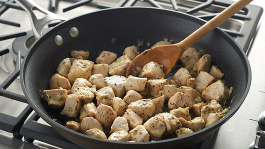

WISTAS Krūtiņa

(MANS PAZEMĪGAIS VIEDOKLIS):
ŠIS IR MANS GO-TO ĒDIENS 75% NO REIZĒM, KAD MĀJĀS
GATAVOJU ĒST. gADIEM ESMU KOPIS ŠO RECEPTI, UN AR
LAIKU ESMU ATKLĀJIS JAUNAS NINSES, KAS ŠO ĒDIENU
PADARA NEAPNĪKOŠU. pROTAMS, IR JĀPIEMIN, KA ŠIS
ĒDIENS IR UZTURVIELĀM BAGĀTS UN ĪPAŠI PIEMĒROTS
AKTĪVIEM CILVĒKIEM KĀ MAN UN TEV.
Sastāvdaļas:
- 400G cāļa krūtiņas filejas
- Eļļa
- Pipari, karijs, srirača, kaltētu ķiploku garšviela, čili pārslas
- Sāls
Pagatavošana:
- Vistu sagriež pēc iespējas smalkākos gabaliņos
- Gabaliņus ieliek bļodā, aplej ar eļļu
- Pievieno garšvielas, visu apmaisa, lai garšvielas tiek pie katra gabaliņa
- Šo miksli var ievietot ledusskapī, lai iemarinējas, vai uzreiz gāzt uz uzsildītas pannas
- Vistas gaļu parasti cepu 20 minūtes, bet jāuzmanās, lai nav par sausu
- Izbaudiet ar makaroniem, dārzeņiem vai citām piedavām.
GO BACKKKKK